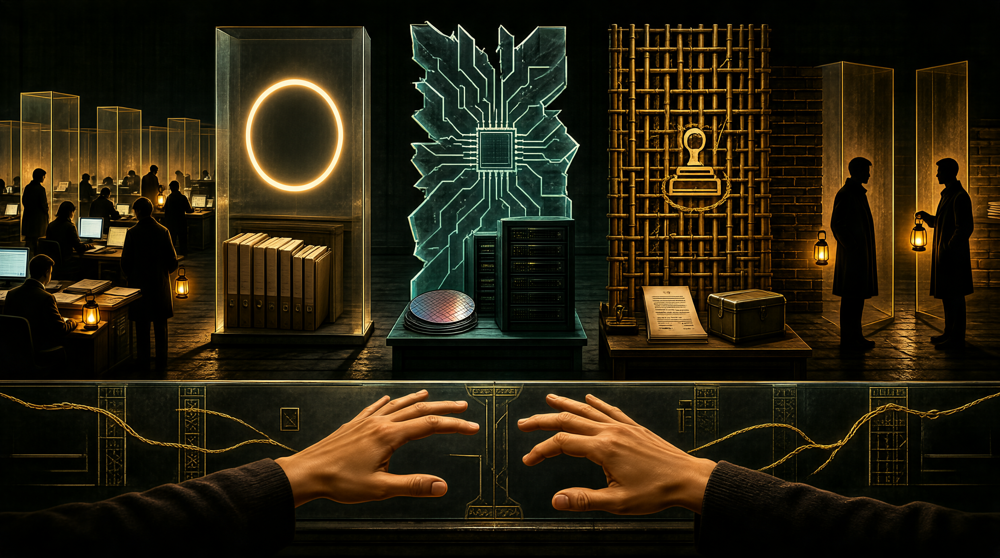

TWO · 今日之墙
开源世界竖起了墙
THE COMMONS IS NOW ZONED
EU · 数字主权
Digital Sovereignty
欧盟推动技术栈去美去中化，开源项目面临"原产地"审查
// IMPACT
代码库有了"地理归属"，fork 可能被视为"政治选择"
US · 芯片法案
CHIPS & Science Act
出口管制、实体清单、AI 芯片限制——基础设施层开始地理化
// IMPACT
大模型训练环境被切割，HuggingFace 镜像与封锁成为日常
CN · 信创
信息技术应用创新
国家级开源基金会、AI 模型登记备案、企业联合体行政逻辑
// IMPACT
合规 ≠ 贡献，安全审查成为参与门槛而非社区共识
同一批人，同样的灯——但空间里不再空了。它被法律、地缘政治和登记制度填充了。

// ZONED.2026
SAME PEOPLE · SAME LANTERNS · NEW WALLS